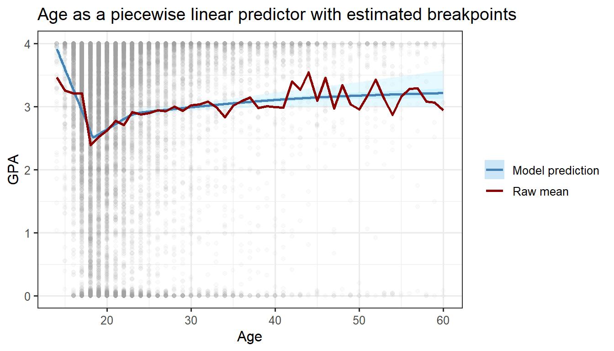

Nonlinear Continuous Predictors in Regression Models
Author
Abby Kaplan
Published
February 21, 2025
Linear and non-linear predictors
This page describes some techniques for handling continuous predictors in a regression model that have a clear non-linear relationship to the outcome.
Sometimes, there’s a roughly linear relationship between a continuous predictor and the outcome. Linear regression is well equipped to model these cases.
Code
students %>%ggplot(aes(x = hs.gpa, y = gpa)) +geom_point(alpha =0.05) +stat_smooth(color ="steelblue", fill ="lightblue1") +labs(x ="High school GPA", y ="College GPA",title ="Linear relationship between high school and college GPA",subtitle ="(Fake data, artificially generated)")
Other times, the relationship can be made linear with a simple transformation. For example, highly skewed predictors may have a linear relationship to the outcome after taking the log.
Code
library(patchwork)income.g = students %>%filter(income >10000) %>%ggplot(aes(x = income, y = gpa)) +geom_point(alpha =0.05) +stat_smooth(color ="steelblue", fill ="lightblue1") +scale_x_continuous(labels = scales::label_currency(scale_cut = scales::cut_short_scale())) +coord_cartesian(ylim =c(2, 4)) +labs(x ="Income", y ="GPA")log.income.g = students %>%filter(income >10000) %>%ggplot(aes(x =log(income), y = gpa)) +geom_point(alpha =0.05) +stat_smooth(color ="steelblue", fill ="lightblue1") +coord_cartesian(ylim =c(2, 4)) +labs(x ="Log income", y ="GPA")income.g + log.income.g +plot_annotation(title ="Linear relationship between log income and GPA",subtitle ="(Fake data, artificially generated)")
But sometimes the relationship between a predictor and the outcome is nonlinear, and it’s clear that no simple transformation will make it so. This is frequently the case when the predictor is a person’s age.
Code
students %>%ggplot(aes(x = age, y = gpa)) +geom_point(alpha =0.05) +stat_smooth(color ="steelblue", fill ="lightblue1") +coord_cartesian(ylim =c(0, 4)) +labs(x ="Age", y ="GPA",title ="Non-linear relationship between age and GPA",subtitle ="(Fake but realistic data)")
This page presents three techniques for handling predictors like this:
Binned regression
Piecewise linear regression
Spline regression
Dataset
All of the examples on this page use a fake but realistic dataset, available as fake_students.csv. Available variables are as follows:
Variable
Variable name
Type
Planet of origin
planet
categorical
Left-handed?
lefty
binary
Major
major
categorical
Age
age
continuous
GPA
gpa
continuous
students =read.csv("fake_students.csv") %>%mutate(planet =fct_infreq(planet))
id
planet
lefty
major
age
gpa
3240
Jupiter
FALSE
Marketing Management
22
3.444
9170
Jupiter
TRUE
Atmospheric Sciences
20
0.942
14367
Jupiter
FALSE
Video/Radio Production
22
2.527
11093
Saturn
FALSE
Music Recording Technology
17
1.303
8621
Jupiter
FALSE
Music Recording Technology
17
3.939
6673
Jupiter
FALSE
Theatre Arts
20
2.064
15553
Jupiter
FALSE
International Studies
31
1.202
756
Jupiter
FALSE
International Studies
38
3.581
7911
Jupiter
FALSE
Music Recording Technology
16
3.944
1698
Jupiter
TRUE
Engineering/Electrical
38
0.000
Caveats, cautions, and notes
Some of the models presented below are bad. Don’t use a modeling technique that’s clearly inappropriate for your data!
Even the models that are decent could use further refinement. In some of the examples below, it would be better to center age before fitting in order to avoid excessive collinearity between the intercept and the age parameter(s). For similar reasons, in the binned models, it would be better to set the baseline level of the age factor to the most frequent category instead of the first one. All of the models would benefit from better handling the fact that the outcome variable, GPA, is censored at 0 and 4 (see this page on nonstandard regression for some options). I’ve ignored both of these issues in order to simplify the code here.
All of the examples below use various R libraries to fit the models. In addition, each model has an accompanying alternative implementation in Stan; Stan sometimes makes it possible to do things that aren’t available in the standard R modeling packages. All the discussion in the text refers to results from the pure R models.
Linear regression
Let’s start with a simple linear regression. This is obviously not a good way to handle nonlinear predictors (and it’s not why you’re here), but it will give us a baseline for comparison against better methods.
Structure of predictors
In a simple linear regression, there’s exactly one predictor associated with the age variable: the age itself.
As a result, the set of possible relationships between age and the outcome is quite limited: a straight line, whose slope is determined by the coefficient of age. The raw plot of age vs. GPA above didn’t look at all like this, which is our first hint that this model may not perform very well.
Fitting the model
We fit the model in the usual way. Besides age, the example below models planet and lefty as fixed effects and major as a random effect.
# Prepare the data for Stan. Age could be included in the X matrix with all the# other predictors, but some things here (and in future models) are easier if we# keep it separate.linear.stan.data =list(N =nrow(students),age = students$age,X =model.matrix(~ planet + lefty, data = students)[,-1],jj =as.numeric(as.factor(students$major)),gpa = students$gpa)linear.stan.data$I =ncol(linear.stan.data$X)linear.stan.data$J =max(linear.stan.data$jj)# Fit the model.linear.stan =stan("linear.stan", data = linear.stan.data,chains =3, iter =1000)# Summarize the fitted parameters.summary(linear.stan, pars =c("alpha", "beta", "beta_age"))$summary
data {// Number of observationsint<lower=0> N;// Agevector[N] age;// Number of other predictorsint<lower=0> I;// Matrix of other predictorsmatrix[N,I] X;// Number of groupsint<lower=1> J;// Groupsint<lower=1,upper=J> jj[N];// Outcomesvector<lower=0,upper=4>[N] gpa;}parameters {// Interceptreal alpha;// Coefficient of agereal beta_age;// Coefficients of other predictorsvector[I] beta;// Group-level interceptsvector[J] gamma;// Scale of errorsreal<lower=0> sigma;// Scale of group-level interceptsreal<lower=0> sigma_gamma;}model {// Priors alpha ~ normal(3, 1); beta_age ~ std_normal(); beta ~ std_normal(); gamma ~ std_normal(); sigma ~ cauchy(0, 1); sigma_gamma ~ cauchy(0, 1);// Model gpa ~ normal(alpha + (age * beta_age) + (X * beta) + (gamma[jj] * sigma_gamma), sigma);}
Interpreting the age parameter
Interpreting the parameters of a simple linear regression is familiar and straightforward. The coefficient of 0.0125 for age means that being one year older is associated with a GPA increase of 0.0125.
Plotting the marginal effect of age is a helpful way to visualize the fitted model (and will be increasingly helpful for later models where interpreting the parameters is less straightforward). Packages like margins and sjPlot will compute and plot marginal effects automatically; the code below does this by hand. For each value of age, we get the predicted average GPA at that age and mean values of all other predictors in the dataset. Confidence intervals (not prediction intervals) around these estimates are constructed by sampling from the multivariate \(t\) distribution of all predictors and summarizing over the samples.
(lmerTest estimates separate degrees of freedom for each fixed effect, but the mvnfast::rmvt() function accepts only a single value for df. I’ve used the smallest degrees of freedom produced by lmerTest, which results in confidence intervals that are slightly too conservative. For a dataset this large, we could alternatively get a close approximation by computing the variance from the multivariate normal distribution.)
Code
# Get the ages we want to plot.ages =seq(min(students$age), max(students$age), 0.1)# Construct a matrix of model predictors with one row per age. All other# predictors are fixed at their mean values in the dataset.X =apply(model.matrix(linear.m), 2, mean)X =matrix(rep(X, length(ages)), nrow =length(ages), byrow = T)X[,which(names(fixef(linear.m)) =="age")] = ages# Get the fixed-effects coefficients and their covariance matrix.coefs =fixef(linear.m)covs =vcov(linear.m)# Get the smallest degrees of freedom estimated by `lmerTest`.df =min(summary(linear.m)$coefficients[,"df"])# Run 10,000 simulations. In each simulation, sample coefficient values from# the multivariate t distribution and use those to get the predicted GPA.# Aggregate across simulations to get a mean estimate and confidence interval# for each age.linear.preds =map_dfr(1:10000,function(sim) { sim.coefs =t(mvnfast::rmvt(1, coefs, covs * (df -2) / df, df))return(data.frame(age = ages,gpa = (X %*% sim.coefs)[,1])) },.id ="sim") %>%group_by(age) %>%summarise(lower.95 =quantile(gpa, 0.025),lower.50 =quantile(gpa, 0.25),upper.50 =quantile(gpa, 0.75),upper.95 =quantile(gpa, 0.975),gpa =mean(gpa),.groups ="drop") %>%mutate(type ="Model prediction")# Add observed raw means by age for plotting.linear.preds = linear.preds %>%bind_rows(students %>%group_by(age) %>%summarise(gpa =mean(gpa), .groups ="drop") %>%mutate(type ="Raw mean"))# Plot model predictions and raw means.linear.preds %>%ggplot(aes(x = age, y = gpa, color = type)) +geom_point(data = students, color ="gray60", alpha =0.05) +geom_ribbon(aes(fill = type, ymin = lower.95, ymax = upper.95),alpha =0.4, color =NA) +geom_ribbon(aes(fill = type, ymin = lower.50, ymax = upper.50),alpha =0.6, color =NA) +geom_line(linewidth =1) +scale_color_manual(values =c("steelblue", "red4")) +scale_fill_manual(values =c("lightblue1", NA),guide =guide_legend(override.aes =list(fill =c(dsa.colors(3), "white")))) +coord_cartesian(ylim =c(0, 4)) +labs(x ="Age", y ="GPA", color ="", fill ="",title ="Age as a linear predictor")
The plot makes it clear that this is not a good model; it misrepresents the relationship between age and GPA.
Binning
The problem with the linear model is that different regions of the age range behave very differently. Why not group similar ages together and make each group a separate predictor?
This “binning” approach is easy to implement and doesn’t require any special regression techniques. All we’ve done is turned a continuous predictor into a categorical one! It’s also familiar; lots of datasets have continuous variables that are “pre-binned”. (If you’re analyzing survey data where respondents chose an age range – 21-30, 31-40, 41-50, etc. – then you’re going to use binning by necessity.)
Structure of predictors
If we create \(I\) bins, the age variable is associated with \(I - 1\) predictors. Alternatively, we could use \(I\) predictors and omit the intercept from the model – again, this is all just standard procedure for a categorical variable. Each predictor has the value 1 for ages within its bin and 0 otherwise.
The binning approach assumes a “stepped” relationship between age and the outcome: the outcome has a constant average value within each bin, and the jump from one bin to the next can be arbitrarily large or small.
The graph of the raw data didn’t really look like this, which is a bad sign. Let’s forge ahead and fit a binned model anyway.
# Fit the model.binned.m = lmerTest::lmer(gpa ~ planet + lefty + age.bin + (1| major),data = students %>%mutate(age.bin =case_when(age <=17~"17 and under", age <=22~"18-22", age <=40~"23-40", age <=50~"41-50", T ~"51+"),age.bin =fct_reorder(age.bin, age, mean)))# Summarize the fitted parameters.summary(binned.m)$coefficients
# Prepare the data for Stan.students.age = students %>%mutate(age.bin =case_when(age <=17~"17 and under", age <=22~"18-22", age <=40~"23-40", age <=50~"41-50", T ~"51+"),age.bin =fct_reorder(age.bin, age, mean))binned.stan.data =list(N =nrow(students.age),age =model.matrix(~ age.bin, data = students.age)[,-1],age_bin = students.age$age.bin,X =model.matrix(~ planet + lefty, data = students.age)[,-1],jj =as.numeric(as.factor(students.age$major)),gpa = students.age$gpa)binned.stan.data$I_age =ncol(binned.stan.data$age)binned.stan.data$I =ncol(binned.stan.data$X)binned.stan.data$J =max(binned.stan.data$jj)# Fit the model.binned.stan =stan("binning.stan", data = binned.stan.data,chains =3, iter =1000)# Summarize the fitted parameters.summary(binned.stan, pars =c("alpha", "beta", "beta_age"), probs =c())$summary
data {// Number of observationsint<lower=0> N;// Number of age binsint<lower=0> I_age;// Matrix of age binsmatrix[N,I_age] age;// Number of other predictorsint<lower=0> I;// Matrix of other predictorsmatrix[N,I] X;// Number of groupsint<lower=1> J;// Groupsint<lower=1,upper=J> jj[N];// Outcomesvector<lower=0,upper=4>[N] gpa;}parameters {// Interceptreal alpha;// Coefficients of age binsvector[I_age] beta_age;// Coefficients of other predictorsvector[I] beta;// Group-level interceptsvector[J] base_gamma;// Scale of errorsreal<lower=0> sigma;// Scale of group-level interceptsreal<lower=0> sigma_gamma;}transformed parameters {// Scaled group-level intercepts.vector[J] gamma = base_gamma * sigma_gamma;}model {// Priors alpha ~ normal(3, 1); beta_age ~ std_normal(); beta ~ std_normal(); base_gamma ~ std_normal(); sigma ~ cauchy(0, 1); sigma_gamma ~ cauchy(0, 1);// Model gpa ~ normal(alpha + (age * beta_age) + (X * beta) + gamma[jj], sigma);}
Interpreting the age parameters
Since binned age is just an ordinary categorical variable, there’s nothing special about interpreting the coefficients of the age bins. This model estimates that students 18-22 average a GPA 0.55 points lower than students under 18, students 23-40 average a GPA 0.26 points lower, students 41-50 average a GPA 0.05 points lower, and students 51 and older average a GPA 0.07 points lower.
Code
# Get the ages we want to plot and the corresponding bins. (If not all the ages# we want to plot are represented in the original dataframe, we have to recreate# the bins here.)ages =seq(min(students$age), max(students$age), 0.1)age.bins =case_when(ages <=17~"17 and under", ages <=22~"18-22", ages <=40~"23-40", ages <=50~"41-50", T ~"51+")# Construct a matrix of model predictors with one row per age. All other# predictors are fixed at their mean values in the dataset.X =apply(model.matrix(binned.m), 2, mean)X =matrix(rep(X, length(ages)), nrow =length(ages), byrow = T)X[,which(grepl("age.bin", names(fixef(binned.m))))] =model.matrix(~ age.bin,data =data.frame(age = ages) %>%mutate(age.bin = age.bins,age.bin =fct_reorder(age.bin, age, mean)))[,-1]# Get the fixed-effects coefficients and their covariance matrix.coefs =fixef(binned.m)covs =vcov(binned.m)# Get the smallest degrees of freedom estimated by `lmerTest`.df =min(summary(binned.m)$coefficients[,"df"])# Run 10,000 simulations. In each simulation, sample coefficient values from# the multivariate t distribution and use those to get the predicted GPA.# Aggregate across simulations to get a mean estimate and confidence interval# for each age.binned.preds =map_dfr(1:10000,function(sim) { sim.coefs =t(rmvt(1, coefs, covs * (df -2) / df, df))return(data.frame(age = ages,age.bin = age.bins,gpa = (X %*% sim.coefs)[,1])) },.id ="sim") %>%group_by(age, age.bin) %>%summarise(lower.95 =quantile(gpa, 0.025),lower.50 =quantile(gpa, 0.25),upper.50 =quantile(gpa, 0.75),upper.95 =quantile(gpa, 0.975),gpa =mean(gpa),.groups ="drop") %>%mutate(type ="Model prediction")# Add observed raw means by age for plotting.binned.preds = binned.preds %>%bind_rows(students %>%group_by(age) %>%summarise(gpa =mean(gpa), .groups ="drop") %>%mutate(type ="Raw mean"))# Plot model predictions and raw means.binned.preds %>%ggplot(aes(x = age, y = gpa, color = type, group = age.bin)) +geom_point(data = students %>%mutate(age.bin =model.frame(binned.m)$age.bin),color ="gray60", alpha =0.05) +geom_ribbon(aes(fill = type, ymin = lower.95, ymax = upper.95),alpha =0.4, color =NA) +geom_ribbon(aes(fill = type, ymin = lower.50, ymax = upper.50),alpha =0.6, color =NA) +geom_line(linewidth =1) +scale_color_manual(values =c("steelblue", "red4")) +scale_fill_manual(values =c("lightblue1", NA),guide =guide_legend(override.aes =list(fill =c(dsa.colors(3), "white")))) +coord_cartesian(ylim =c(0, 4)) +labs(x ="Age", y ="GPA", color ="", fill ="",title ="Age as a binned predictor")
This model is an improvement over one with age as a simple linear predictor, but it still isn’t great. This model treats students age 18-22, for example, as all the same. But it’s much more likely that the thing students in this age range have in common isn’t that they all have a similar average GPA; rather, it’s that average GPA increases sharply with age in this age range, whereas it increases more slowly with age for older students and actually decreases with age for younger students.
Fitting the model plus breakpoints
When we fit the binned model, we pre-specified the breakpoints between bins. But what if different breakpoints would yield a better model? It would be nice if we could include the breakpoints themselves as parameters to be estimated by the model, in addition to the cofficient for each bin.
The segmented package provides a function, stepmented(), that does precisely this. We specify the following arguments:
obj, a linear model (e.g., fitted with lm()) to which we want to add a binned continuous predictor
seg.Z, a formula with the predictor(s) we want to bin
npsi, the number of breakpoints we want to fit (one less than the number of bins we want)
(It’s also possible to feed your own breakpoints to stepmented(), either as starting points for its estimation or as fixed values.)
The stepmented() function can’t handle models with random effects, but the Stan code below does.
# Prepare the data for Stan.binned.breaks.stan.data =list(N =nrow(students),I_age =4,age = students$age,X =model.matrix(~ planet + lefty, data = students)[,-1],jj =as.numeric(as.factor(students$major)),gpa = students$gpa)binned.breaks.stan.data$I =ncol(binned.breaks.stan.data$X)binned.breaks.stan.data$J =max(binned.breaks.stan.data$jj)# Fit the model. Breakpoints are implemented as a discrete predictor (at# integer values of age), similar to the changepoint model described at# https://mc-stan.org/docs/stan-users-guide/latent-discrete.html#change-point.sectionbinned.breaks.stan =stan("src/binning_breaks.stan",data = binned.breaks.stan.data,pars =c("alpha", "beta", "beta_age", "gamma","sigma", "sigma_gamma", "breakpoints"),chains =3, iter =1000)# Summarize the fitted parameters.summary(binned.breaks.stan,pars =c("alpha", "beta", "beta_age", "breakpoints"),probs =c())$summary
data {// Number of observationsint<lower=0> N;// Number of age binsint<lower=0> I_age;// Array of agesint age[N];// Number of other predictorsint<lower=0> I;// Matrix of other predictorsmatrix[N,I] X;// Number of groupsint<lower=1> J;// Groupsint<lower=1,upper=J> jj[N];// Outcomesvector<lower=0,upper=4>[N] gpa;}transformed data {// Number of age breakpointsint N_breakpoints = I_age - 1;// Limits and size of age rangeint age_min = min(age) - 1;int age_max = max(age);int age_range = age_max - age_min;// Number of possible combinations of breakpoint values (with the restriction// that successive breakpoints must be non-decreasing)int N_combos = falling_factorial(age_range, N_breakpoints) / 2;real log_unif = -log(N_combos);// Breakpoint values that correspond to each element in the lp vectorint<lower=1,upper=age_range> inds_bp[N_combos,N_breakpoints];// Number and indices of elements in the lp vector that correspond to each// breakpoint value and ageint<lower=0,upper=N_combos> N_bp_age[N_breakpoints,age_range] = rep_array(0, N_breakpoints, age_range);int<lower=0,upper=N_combos> inds_bp_age[N_breakpoints,age_range,N_combos] = rep_array(0, N_breakpoints, age_range, N_combos);// Number and indices of observations less than, or greater than or equal to,// each ageint<lower=0,upper=N> N_age_lt[age_range] = rep_array(0, age_range);int<lower=0,upper=N> N_age_ge[age_range] = rep_array(0, age_range);int<lower=0,upper=N> inds_age_lt[age_range,N] = rep_array(0, age_range, N);int<lower=0,upper=N> inds_age_ge[age_range,N] = rep_array(0, age_range, N);// Populate lp indices {// Keep track of which combination of breakpoint values we're working with;// start with all breakpoints set to 1 (= smallest age in dataset)int inds_age[N_breakpoints] = rep_array(1, N_breakpoints);// Iterate over all possible combinations of breakpoint valuesfor(i in1:N_combos) {// Iterate over breakpointsfor(b in1:N_breakpoints) {// Record the value of this breakpoint inds_bp[i,b] = inds_age[b];// Increment the number of elements that have this breakpoint set to// this value N_bp_age[b,inds_age[b]] += 1;// Add the index of this element of lp to the list of indices for this// breakpoint set to this value inds_bp_age[b,inds_age[b],N_bp_age[b,inds_age[b]]] = i; }// Increment breakpoint values: increase the last breakpoint by 1, unless// it's already at the maximum, in which case reset the last breakpoint to// 1 and increase the second-to-last breakpoint by 1, unless it's already// at the maximum, in which case repeat until we find a breakpoint that// can be increasedfor(b in1:N_breakpoints) {int rev_b = N_breakpoints - b + 1;if(inds_age[rev_b] < age_range) { inds_age[rev_b] += 1;if(rev_b < N_breakpoints) {for(b2 in (rev_b+1):N_breakpoints) { inds_age[b2] = inds_age[b2-1]; } }break; } else { inds_age[rev_b] = 1; } } } }// Populate observation age indicesfor(n in1:N) {for(age_ind in1:(age[n]-age_min)) { N_age_ge[age_ind] += 1; inds_age_ge[age_ind,N_age_ge[age_ind]] = n; }for(age_ind in (age[n]-age_min+1):age_range) { N_age_lt[age_ind] += 1; inds_age_lt[age_ind,N_age_lt[age_ind]] = n; } }}parameters {// Interceptreal alpha;// Coefficients of age binsvector[N_breakpoints] beta_age;// Coefficients of other predictorsvector[I] beta;// Group-level interceptsvector[J] base_gamma;// Scale of errorsreal<lower=0> sigma;// Scale of group-level interceptsreal<lower=0> sigma_gamma;}transformed parameters {// Scaled group-level interceptsvector[J] gamma = base_gamma * sigma_gamma;// All predictors except agevector[N] mu = alpha + (X * beta) + (gamma[jj] * sigma_gamma);// Accumulate log p when discrete parameters are marginalized outvector[N_combos] lp = rep_vector(log_unif, N_combos);// Iterate over breakpointsfor(b in1:N_breakpoints) {// Iterate over possible values the breakpoint might havefor(a in1:age_range) {// Useful counts and indices stored aboveint N_b = N_bp_age[b,a];int b_inds[N_b] = inds_bp_age[b,a,1:N_b];int N_lt = N_age_lt[a];int N_ge = N_age_ge[a];int ge_inds[N_ge] = inds_age_ge[a,1:N_ge];// If this is the first breakpoint and its value is greater than the// smallest age, all observations with a smaller age get mu with no age-// related parametersif(b == 1 && N_lt > 0) {int lt_inds[N_lt] = inds_age_lt[a,1:N_lt]; lp[b_inds] += normal_lpdf(gpa[lt_inds] | mu[lt_inds], sigma); }// All observations with an age greater than or equal to this breakpoint's// value get mu plus the age parameter corresponding to this brekapoint lp[b_inds] += normal_lpdf(gpa[ge_inds] | mu[ge_inds] + beta_age[b], sigma);// If this is not the first breakpoint, subtract the effect of the// previous breakpointif(b > 1) { lp[b_inds] -= normal_lpdf(gpa[ge_inds] | mu[ge_inds] + beta_age[b-1], sigma); } } }}model {// Priors alpha ~ normal(3, 1); beta_age ~ std_normal(); beta ~ std_normal(); base_gamma ~ std_normal(); sigma ~ cauchy(0, 1); sigma_gamma ~ cauchy(0, 1);// Modeltarget += log_sum_exp(lp);}generated quantities {// Breakpointsint<lower=age_min+1,upper=age_max> breakpoints[N_breakpoints]; {int lp_ind = categorical_logit_rng(lp);for(b in1:N_breakpoints) { breakpoints[b] = age_min + inds_bp[lp_ind,b]; } }}
The coefficients of the age bins in this model are named U[integer].age by the stepmented() function. The model additionally fits a parameter for each breakpoint; these are named psi[integer].age. Surprisingly, the summary() of a fitted model shows standard errors for these parameters but not their estimated values. We can find the estimated values in binned.breaks.m$psi:
Code
binned.breaks.m$psi
Initial Est. St.Err
psi1.age NA 17.19766 0.7989671
psi2.age NA 19.22244 0.7014018
psi3.age NA 22.56875 0.6330074
Interpreting the age and breakpoint parameters
The coefficients for the age bins are the same as they were in the model with fixed breakpoints, with one difference: stepmented() represents each coefficient as the difference between the mean for that bin and the mean for the previous bin, not the difference between the mean for that bin and the overall intercept.
The fitted model estimates that students in the second-lowest age bin have an average GPA 0.66 points lower than students in the lowest age bin, students in the third-lowest age bin have an average GPA 0.22 points higher than students in the second-lowest age bin, and so on.
This difference-from-the-previous-bin model isn’t a requirement of fitting a model that estimates breakpoints; it’s just the way segmented() does things. The alternative Stan code above models intercepts using the difference-from-the-intercept approach.
The model estimates breakpoints at ages 17.2, 19.22, and 22.57, but with some uncertainty:
When we plot the fitted values of the model at various ages, we get a surprise: it looks like the model has curves! This is because there’s uncertainty around the locations of the breakpoints. The gradual decrease between ages 16 and 18, for example, does not mean that the model predicts a gradual decline in GPA during those years. Rather, the model predicts a sharp decrease at some point (because that’s how binning works); the gradual decline represents the fact that the model isn’t sure where that sharp decrease is. We can also see this uncertainty in the fact that the confidence bands around the predictions increase dramatically at the boundaries between bins.
Code
# Get the ages we want to plot.ages =seq(min(students$age), max(students$age), 0.1)# Construct a matrix of model predictors with one row per age. All other# predictors are fixed at their mean values in the dataset.X =apply(model.matrix(binned.breaks.m), 2, mean)X = X[!grepl("age$", names(X))]X =matrix(rep(X, length(ages)), nrow =length(ages), byrow = T)# Get the parameters and their covariance matrix. Note which parameters are for# breakpoints (as opposed to being coefficients for predictors).coefs =coef(binned.breaks.m)covs =vcov(binned.breaks.m)breakpoint.ind =grepl("^psi", names(coefs))coefs[breakpoint.ind] = binned.breaks.m$psi[,"Est."]# Get the degrees of freedom.df = binned.breaks.m$df.residual# Run 10,000 simulations. In each simulation, sample parameter values from# the multivariate t distribution and use those to get the predicted GPA. Note# that we have to determine age bins separately for each simulation.# Aggregate across simulations to get a mean estimate and confidence interval# for each age.binned.breaks.preds =map_dfr(1:10000,function(sim) { sim.coefs =t(rmvt(1, coefs, covs * (df -2) / df, df)) sim.breakpoints =cummax(sim.coefs[breakpoint.ind]) sim.X =cbind(X,do.call("cbind",lapply(sim.breakpoints, function(b) { ages > b }) ))return(data.frame(age = ages,gpa = (sim.X %*% sim.coefs[!breakpoint.ind])[,1])) },.id ="sim") %>%group_by(age) %>%summarise(lower.95 =quantile(gpa, 0.025),lower.50 =quantile(gpa, 0.25),upper.50 =quantile(gpa, 0.75),upper.95 =quantile(gpa, 0.975),gpa =mean(gpa),.groups ="drop") %>%mutate(type ="Model prediction")# Add observed raw means by age for plotting.binned.breaks.preds = binned.breaks.preds %>%bind_rows(students %>%group_by(age) %>%summarise(gpa =mean(gpa), .groups ="drop") %>%mutate(type ="Raw mean"))# Plot model predictions and raw means.binned.breaks.preds %>%ggplot(aes(x = age, y = gpa, color = type)) +geom_point(data = students,color ="gray60", alpha =0.05) +geom_ribbon(aes(fill = type, ymin = lower.95, ymax = upper.95),alpha =0.4, color =NA) +geom_ribbon(aes(fill = type, ymin = lower.50, ymax = upper.50),alpha =0.6, color =NA) +geom_line(linewidth =1) +scale_color_manual(values =c("steelblue", "red4")) +scale_fill_manual(values =c("lightblue1", NA),guide =guide_legend(override.aes =list(fill =c(dsa.colors(3), "white")))) +coord_cartesian(ylim =c(0, 4)) +labs(x ="Age", y ="GPA", color ="", fill ="",title ="Age as a binned predictor with estimated breakpoints")
Full disclosure: some of the summaries above are a lie. In reality, stepmented() encounters severe model-fitting problems on this particular dataset – which yet another indication that, even with breakpoints estimated by the model itself, binning is not the best model here. Because of these problems, stepmented() refuses to provide the usual summary information via summary() and other functions. It’s possible to get some of the model’s estimates in other ways, which is how I created the graphs above, but the model is giving us big flashing warnings that these estimates are not reliable. (This is also why this example uses only three breakpoints; if we try to fit four breakpoints, the problems are even worse and stepmented() won’t return anything at all.)
Piecewise linear regression
Binning seems like the wrong approach for this dataset; we don’t see the sharp jumps between bins that are inherent to the binning model. A more promising approach is piecewise linear regression, where different ranges of the predictor can have different slopes.
Structure of predictors
In piecewise linear regression, we divide the age variable into \(I\) segments, each of which is associated with its own predictor. The predictor for a given segment has the value 0 for ages below the bottom of the segment, increases linearly throughout the segment, and tops out at its maximum value for all ages above the top of the segment. This means that the coefficient for each predictor tells us the slope of the outcome relative to age within that range; setting each predictor to its maximum value for larger ages ensures that all the linear pieces connect at the breakpoints.
Unlike the “stepped” look of a binned model, a piecewise linear model assumes that there are no discontinuous jumps in the outcome from one age to the next. However, the effect of age can be as large or as small as necessary within each segment.
Fitting the model
It’s straightforward to compute the piecewise predictors and include them in an ordinary linear regression.
data {// Number of observationsint<lower=0> N;// Number of age piecesint<lower=0> I_age;// Matrix of agesmatrix[N,I_age] age;// Number of other predictorsint<lower=0> I;// Matrix of other predictorsmatrix[N,I] X;// Number of groupsint<lower=1> J;// Groupsint<lower=1,upper=J> jj[N];// Outcomesvector<lower=0,upper=4>[N] gpa;}parameters {// Interceptreal alpha;// Coefficients of agevector[I_age] beta_age;// Coefficients of other predictorsvector[I] beta;// Group-level interceptsvector[J] gamma;// Scale of errorsreal<lower=0> sigma;// Scale of group-level interceptsreal<lower=0> sigma_gamma;}model {// Priors alpha ~ normal(3, 1); beta_age ~ std_normal(); beta ~ std_normal(); gamma ~ std_normal(); sigma ~ cauchy(0, 1); sigma_gamma ~ cauchy(0, 1);// Model gpa ~ normal(alpha + (age * beta_age) + (X * beta) + (gamma[jj] * sigma_gamma), sigma);}
Interpreting the age parameters
The parameters of a piecewise linear regression are like the parameters of a simple linear regression, except that there are more of them. This fitted model estimates that GPA decreases by about 0.3 points per year up until age 18, increases by about 0.05 points per year from 18 to 23, increases by about 0.01 points per year from 23 to 45, and decreases by about 0.01 points per year thereafter.
Code
# Get the ages we want to plot and their corresponding predictors.ages =seq(min(students$age), max(students$age), 0.1)age.pieces =cbind(pmin(ages, 18),if_else(ages <=18, 0, pmin(ages, 23) -18),if_else(ages <=23, 0, pmin(ages, 45) -23),if_else(ages <=45, 0, ages -45))# Construct a matrix of model predictors with one row per age. All other# predictors are fixed at their mean values in the dataset.X =apply(model.matrix(piecewise.m), 2, mean)X =matrix(rep(X, length(ages)), nrow =length(ages), byrow = T)X[,which(grepl("^age", names(fixef(piecewise.m))))] = age.pieces# Get the fixed-effects coefficients and their covariance matrix.coefs =fixef(piecewise.m)covs =vcov(piecewise.m)# Get the smallest degrees of freedom estimated by `lmerTest`.df =min(summary(piecewise.m)$coefficients[,"df"])# Run 10,000 simulations. In each simulation, sample coefficient values from# the multivariate t distribution and use those to get the predicted GPA.# Aggregate across simulations to get a mean estimate and confidence interval# for each age.piecewise.preds =map_dfr(1:10000,function(sim) { sim.coefs =t(rmvt(1, coefs, covs * (df -2) / df, df))return(data.frame(age = ages,gpa = (X %*% sim.coefs)[,1])) },.id ="sim") %>%group_by(age) %>%summarise(lower.95 =quantile(gpa, 0.025),lower.50 =quantile(gpa, 0.25),upper.50 =quantile(gpa, 0.75),upper.95 =quantile(gpa, 0.975),gpa =mean(gpa),.groups ="drop") %>%mutate(type ="Model prediction")# Add observed raw means by age for plotting.piecewise.preds = piecewise.preds %>%bind_rows(students %>%group_by(age) %>%summarise(gpa =mean(gpa), .groups ="drop") %>%mutate(type ="Raw mean"))# Plot model predictions and raw means.piecewise.preds %>%ggplot(aes(x = age, y = gpa, color = type)) +geom_point(data = students, color ="gray60", alpha =0.05) +geom_ribbon(aes(fill = type, ymin = lower.95, ymax = upper.95),alpha =0.4, color =NA) +geom_ribbon(aes(fill = type, ymin = lower.50, ymax = upper.50),alpha =0.6, color =NA) +geom_line(linewidth =1) +scale_color_manual(values =c("steelblue", "red4")) +scale_fill_manual(values =c("lightblue1", NA),guide =guide_legend(override.aes =list(fill =c(dsa.colors(3), "white")))) +coord_cartesian(ylim =c(0, 4)) +labs(x ="Age", y ="GPA", color ="", fill ="",title ="Age as a piecewise linear predictor")
This is looking more plausible than any of the other models we’ve tried so far. Not perfect – a single breakpoint at age 18 clearly doesn’t do justice to whatever is going on for the youngest students. But it’s an improvement.
Fitting the model plus breakpoints
As with the binned model, we might want to fit the breakpoints in addition to fitting the coefficients for the associated predictors. The segmented() function (also from the segmented package) lets us do this. The arguments are the same as those for stepmented(), except that this time we want to include age as one of the predictors in the base model (so that the first segment gets a slope).
# Prepare the data for Stan.piecewise.breaks.stan.data =with(list(df = students %>%slice_sample(n =5000) ),list(N =nrow(df),I_age =3,age = df$age,X =model.matrix(~ planet + lefty, data = df)[,-1],jj =as.numeric(as.factor(df$major)),gpa = df$gpa ))piecewise.breaks.stan.data$I =ncol(piecewise.breaks.stan.data$X)piecewise.breaks.stan.data$J =max(piecewise.breaks.stan.data$jj)# Fit the model. Breakpoints are implemented as a discrete predictor (at# integer values of age), similar to the changepoint model described at# https://mc-stan.org/docs/stan-users-guide/latent-discrete.html#change-point.section.# The number of parameters grows quadratically with the number of observations# and exponentially with the number of breakpoints; for computational# tractability, this example fits a model with just two breakpoints to a subset# of the data.piecewise.breaks.stan =stan("piecewise_breaks.stan",data = piecewise.breaks.stan.data,pars =c("alpha", "beta", "beta_age", "gamma","sigma", "sigma_gamma", "breakpoints"),chains =3, iter =1000)# Summarize the fitted parameters.summary(piecewise.breaks.stan,pars =c("alpha", "beta", "beta_age", "breakpoints"),probs =c())$summary
data {// Number of observationsint<lower=0> N;// Number of age piecesint<lower=0> I_age;// Array of agesint age[N];// Number of other predictorsint<lower=0> I;// Matrix of other predictorsmatrix[N,I] X;// Number of groupsint<lower=1> J;// Groupsint<lower=1,upper=J> jj[N];// Outcomesvector<lower=0,upper=4>[N] gpa;}transformed data {// Number of age breakpointsint N_breakpoints = I_age - 1;// Limits and size of age rangeint age_min = min(age) - 1;int age_max = max(age);int age_range = age_max - age_min;// Age reset to start at 1int<lower=1,upper=age_range> age_reset[N];// Number of possible combinations of breakpoint values (with the restriction// that successive breakpoints must be non-decreasing)int N_combos = falling_factorial(age_range, N_breakpoints) / 2;real log_unif = -log(N_combos);// Breakpoint values that correspond to each element in the lp vectorint<lower=1,upper=age_range> inds_bp[N_combos,N_breakpoints];// Number and indices of observations greater than each ageint<lower=0,upper=N> N_age_gt[age_range] = rep_array(0, age_range);int<lower=0,upper=N> inds_age_gt[age_range,N] = rep_array(0, age_range, N);// Populate breakpoint values {// Keep track of which combination of breakpoint values we're working with;// start with all breakpoints set to 1 (= smallest age in dataset)int inds_age[N_breakpoints] = rep_array(1, N_breakpoints);// Iterate over all possible combinations of breakpoint valuesfor(i in1:N_combos) {// Record the value of this breakpoint inds_bp[i,] = inds_age;// Increment breakpoint values: increase the last breakpoint by 1, unless// it's already at the maximum, in which case reset the last breakpoint to// 1 and increase the second-to-last breakpoint by 1, unless it's already// at the maximum, in which case repeat until we find a breakpoint that// can be increasedfor(b in1:N_breakpoints) {int rev_b = N_breakpoints - b + 1;if(inds_age[rev_b] < age_range) { inds_age[rev_b] += 1;if(rev_b < N_breakpoints) {for(b2 in (rev_b+1):N_breakpoints) { inds_age[b2] = inds_age[b2-1]; } }break; } else { inds_age[rev_b] = 1; } } } }// Populate observation age indicesfor(n in1:N) { age_reset[n] = age[n] - age_min;for(age_ind in1:(age_reset[n]-1)) { N_age_gt[age_ind] += 1; inds_age_gt[age_ind,N_age_gt[age_ind]] = n; } }}parameters {// Interceptreal alpha;// Coefficients of age piecesvector[I_age] beta_age;// Coefficients of other predictorsvector[I] beta;// Group-level interceptsvector[J] base_gamma;// Scale of errorsreal<lower=0> sigma;// Scale of group-level interceptsreal<lower=0> sigma_gamma;}transformed parameters {// Scaled group-level interceptsvector[J] gamma = base_gamma * sigma_gamma;// All predictors except later age segmentsvector[N] mu = alpha + (X * beta) + (gamma[jj] * sigma_gamma) + (to_vector(age_reset) * beta_age[1]);// Accumulate log p when discrete parameters are marginalized outvector[N_combos] lp = rep_vector(log_unif, N_combos);// Iterate over all possible combinations of breakpoint valuesfor(i in1:N_combos) {// Get the values of the breakpoints for this combinationint bps[N_breakpoints] = inds_bp[i,];// Get the mus computed so farvector[N] temp_mu = mu;// Iterate over breakpointsfor(b in1:N_breakpoints) {// Useful counts and indices stored aboveint N_gt = N_age_gt[bps[b]];int gt_inds[N_gt] = inds_age_gt[bps[b],1:N_gt];// The value of the previous breakpoint, if there is onereal prev_bp = 0;if(b > 1) { prev_bp = bps[b-1]; }// For all ages greater than the value of this breakpoint, remove the// coefficient * parameter associated with the previous breakpoint and add// this one instead temp_mu[gt_inds] -= (to_vector(age_reset[gt_inds]) - prev_bp) * beta_age[b]; temp_mu[gt_inds] += (bps[b] - prev_bp) * beta_age[b]; temp_mu[gt_inds] += (to_vector(age_reset[gt_inds]) - bps[b]) * beta_age[b+1]; }// Add the computed mus for this element of log p lp[i] += normal_lpdf(gpa | temp_mu, sigma); }}model {// Priors alpha ~ normal(3, 1); beta_age ~ std_normal(); beta ~ std_normal(); base_gamma ~ std_normal(); sigma ~ cauchy(0, 1); sigma_gamma ~ cauchy(0, 1);// Modeltarget += log_sum_exp(lp);}generated quantities {// Breakpointsint<lower=age_min+1,upper=age_max> breakpoints[N_breakpoints]; {int lp_ind = categorical_logit_rng(lp);for(b in1:N_breakpoints) { breakpoints[b] = age_min + inds_bp[lp_ind,b]; } }}
As before, we can find the estimated breakpoints in piecewise.breaks.m$psi:
Code
piecewise.breaks.m$psi
Initial Est. St.Err
psi1.age NA 18.31286 0.1022505
psi2.age NA 23.14319 0.6970084
psi3.age NA 39.00000 8.6167071
Interpreting the age and breakpoint parameters
The segmented() function parameterizes the piecewise model differently from the example above, analogous to the stepmented() function: the coefficient for each segment is the difference in slope from the previous segment, not the absolute slope.
The fitted model estimates that GPA decreases by about 0.327 points per year among the youngest students, increases by about -0.327 +round(coef(piecewise.breaks.m)[["U1.age"]], 3) = 0.082 points per year in the next age group (from approximately age 18.3 to age 23.1), and so on. As before, the estimated breakpoints come with some uncertainty:
The degree of uncertainty around a given breakpoint corresponds to the apparent sharpness of the break in that region of the age range when we plot marginal predicted outcomes by age. The fitted model is quite certain that the first breakpoint is almost exactly 18.3; the plot shows a very sharp change in slope at that point. The model is less certain about the precise location of the breakpoint around 23.1, and the change in slope is correspondingly spread out over a larger range of ages. Finally, the model has basically no idea where the last breakpoint should be, which means that the rest of the plotted predicted values look like a very gentle curve.
Code
# Get the ages we want to plot.ages =seq(min(students$age), max(students$age), 0.1)# Construct a matrix of model predictors with one row per age. All other# predictors are fixed at their mean values in the dataset. The first age# predictor is just raw age; predictors for subsequent segments will be filled# in within individual simulations.X =apply(model.matrix(piecewise.breaks.m), 2, mean)X = X[!grepl("age$", names(X))]X =matrix(rep(X, length(ages)), nrow =length(ages), byrow = T)X =cbind(X, ages)# Get the parameters and their covariance matrix. Note which parameters are for# breakpoints (as opposed to being coefficients for predictors).coefs =coef(piecewise.breaks.m)covs =vcov(piecewise.breaks.m)breakpoint.ind =grepl("^psi", names(coefs))coefs[breakpoint.ind] = piecewise.breaks.m$psi[,"Est."]# Get the degrees of freedom.df = piecewise.breaks.m$df.residual# Run 10,000 simulations. In each simulation, sample parameter values from# the multivariate t distribution and use those to get the predicted GPA.# Aggregate across simulations to get a mean estimate and confidence interval# for each age.piecewise.breaks.preds =map_dfr(1:10000,function(sim) { sim.coefs =t(rmvt(1, coefs, covs * (df -2) / df, df)) sim.breakpoints =cummax(sim.coefs[breakpoint.ind]) sim.X =cbind(X,do.call("cbind",lapply(sim.breakpoints, function(b) { pmax(ages - b, 0) }) ))return(data.frame(age = ages,gpa = (sim.X %*% sim.coefs[!breakpoint.ind])[,1])) },.id ="sim") %>%group_by(age) %>%summarise(lower.95 =quantile(gpa, 0.025),lower.50 =quantile(gpa, 0.25),upper.50 =quantile(gpa, 0.75),upper.95 =quantile(gpa, 0.975),gpa =mean(gpa),.groups ="drop") %>%mutate(type ="Model prediction")# Add observed raw means by age for plotting.piecewise.breaks.preds = piecewise.breaks.preds %>%bind_rows(students %>%group_by(age) %>%summarise(gpa =mean(gpa), .groups ="drop") %>%mutate(type ="Raw mean"))# Plot model predictions and raw means.piecewise.breaks.preds %>%ggplot(aes(x = age, y = gpa, color = type)) +geom_point(data = students,color ="gray60", alpha =0.05) +geom_ribbon(aes(fill = type, ymin = lower.95, ymax = upper.95),alpha =0.4, color =NA) +geom_ribbon(aes(fill = type, ymin = lower.50, ymax = upper.50),alpha =0.6, color =NA) +geom_line(linewidth =1) +scale_color_manual(values =c("steelblue", "red4")) +scale_fill_manual(values =c("lightblue1", NA),guide =guide_legend(override.aes =list(fill =c(dsa.colors(3), "white")))) +coord_cartesian(ylim =c(0, 4)) +labs(x ="Age", y ="GPA", color ="", fill ="",title ="Age as a piecewise linear predictor with estimated breakpoints")

For this dataset, these piecewise regressions are – at least impressionistically – a big improvement over the simple linear and binned models. They’re not perfect; in particular, we’re still not handling the youngest ages very well. (For a model with pre-specified breakpoints, we might consider including both 17 and 18 as breakpoints.)
The biggest red flag is the fact that the segmented() function has no idea where the largest breakpoint should optimally be located. This suggests that, for students over 30, the relationship between age is neither strictly linear nor a simple combination of linear pieces with a clear break between them. The curve in the plot of the marginal estimates is artificial (remember that it represents an aggregation over many underlying non-curvy models), but it also looks pretty good. Is there a way to model this relationship as a curve directly? Of course there is.
Splines
Straight lines are mathematically easy. Certain kinds of curves (e.g., squares or logarithms) are also mathematically easy. Arbitrary curves are hard. Fortunately, splines are here to help.
A spline, basically, is a wiggly curve that’s created by adding together several smaller components. (They’re similar to Fourier analysis, where you can represent an arbitrarily complex wave as the sum of many simple sine waves – but splines use polynomial functions instead of trigonometric ones.) The maximum wiggliness of a spline is determined by two things: the degree of its component polynomial functions, and the number of knots at which adjacent functions join together. You get to choose both of these things when you create your spline, and you may want to experiment with different options. Too little wiggliness and the model won’t fit your data very well; too much, and the model won’t know what to do with the extra pieces (leading to non-convergence, overfitting, or undesirable correlations among your fitted parameters.)
Structure of predictors
We’re going to construct our splines out of “basis splines” (B-splines). B-splines are polynomial functions defined recursively as the sum of lower-order polynomials. For a spline of degree \(d\) with \(k\) knots, there are \(d + k\) B-splines. For example, a cubic spline (degree 3) with 5 knots has 8 B-splines.
There’s no rule that says knots have to be spaced evenly. One common approach is to put the knots at quantiles of the observed distribution, which permits more wiggliness in the regions where you have more data.
Just like in the previous examples, the overall relationship between age and outcome is determined by the sum of each of the age-related predictors multiplied by its fitted coefficient. Since the predictors in spline regression are curves, the relationship between age and outcome is a curve too.
Fitting the model
Computing B-splines isn’t too conceptually difficult (see Milad Kharratzadeh’s guide to spline regression for a good illustration), but it’s definitely tedious. It’s much easier to let the splines package do the work for us. First, we use the bs() function to construct B-splines over the age range in our dataset. The first argument to bs() is students$age – that is, a vector of all the observations of age in our dataset. We also specify the degree (3 for cubic splines) and df (total number of B-splines, equal to degree plus the number of knots we want). bs() will automatically put knots at the quantiles of the data. Instead of specifying df, we could instead provide knots, a vector of knots at whatever locations we choose.
The bs() function returns a matrix with one row for each observation in our dataset and one column for each B-spline. The value of each cell is the value of that B-spline for that observation. Now we can include the output of bs() as predictors in an ordinary linear regression.
# Prepare the data for Stan. This example saves the B-splines in R and feeds# them into Stan; alternatively, it's possible to compute B-splines within Stan# itself.splines.stan.data =list(N =nrow(students),age = students$age,degree =3,basis_splines = splines.bs,X =model.matrix(~ planet + lefty, data = students)[,-1],jj =as.numeric(as.factor(students$major)),gpa = students$gpa)splines.stan.data$I_basis =ncol(splines.stan.data$basis_splines)splines.stan.data$I =ncol(splines.stan.data$X)splines.stan.data$J =max(splines.stan.data$jj)# Fit the model.splines.stan =stan("splines.stan", data = splines.stan.data,chains =3, iter =1000)# Summarize the fitted parameters.summary(splines.stan, pars =c("alpha", "beta", "beta_age"),probs =c())$summary
data {// Number of observationsint<lower=0> N;// Agevector[N] age;// Degree of splinesint degree;// Number of basis splinesint I_basis;// Matrix of basis splinesmatrix[N,I_basis] basis_splines;// Number of other predictorsint<lower=0> I;// Matrix of other predictorsmatrix[N,I] X;// Number of groupsint<lower=1> J;// Groupsint<lower=1,upper=J> jj[N];// Outcomesvector<lower=0,upper=4>[N] gpa;}parameters {// Interceptreal alpha;// Coefficients of age splinesvector[I_basis] beta_age;// Coefficients of other predictorsvector[I] beta;// Group-level interceptsvector[J] gamma;// Scale of errorsreal<lower=0> sigma;// Scale of group-level interceptsreal<lower=0> sigma_gamma;}model {// Priors alpha ~ normal(3, 1); beta_age ~ std_normal(); beta ~ std_normal(); gamma ~ std_normal(); sigma ~ cauchy(0, 1); sigma_gamma ~ cauchy(0, 1);// Model gpa ~ normal(alpha + (basis_splines * beta_age) + (X * beta) + (gamma[jj] * sigma_gamma), sigma);}
Interpreting the age parameters
A big drawback of spline regression is that it’s exceedingly hard to interpret the coefficients of B-splines. The estimated coefficient of -0.803 for the first B-spline means something like “that curve multiplied by -0.803 contributes to the outcome” – which isn’t very helpful.
It’s much better to look at the shape of the overall spline as a whole. This is where our plots of the marginal effects of age come in especially handy. The relationship between age and GPA is that curve – it’s pretty much that simple.
Code
# Get the ages we want to plot and their corresponding predictors.ages =seq(min(students$age), max(students$age), 0.1)ages.bs =bs(ages, degree =3, knots =attr(splines.bs, "knots"))# Construct a matrix of model predictors with one row per age. All other# predictors are fixed at their mean values in the dataset.X =apply(model.matrix(splines.m), 2, mean)X =matrix(rep(X, length(ages)), nrow =length(ages), byrow = T)X[,which(grepl("^spline", names(fixef(splines.m))))] = ages.bs# Get the fixed-effects coefficients and their covariance matrix.coefs =fixef(splines.m)covs =vcov(splines.m)# Get the smallest degrees of freedom estimated by `lmerTest`.df =min(summary(splines.m)$coefficients[,"df"])# Run 10,000 simulations. In each simulation, sample coefficient values from# the multivariate t distribution and use those to get the predicted GPA.# Aggregate across simulations to get a mean estimate and confidence interval# for each age.splines.preds =map_dfr(1:10000,function(sim) { sim.coefs =t(rmvt(1, coefs, covs * (df -2) / df, df))return(data.frame(age = ages,gpa = (X %*% sim.coefs)[,1])) },.id ="sim") %>%group_by(age) %>%summarise(lower.95 =quantile(gpa, 0.025),lower.50 =quantile(gpa, 0.25),upper.50 =quantile(gpa, 0.75),upper.95 =quantile(gpa, 0.975),gpa =mean(gpa),.groups ="drop") %>%mutate(type ="Model prediction")# Add observed raw means by age for plotting.splines.preds = splines.preds %>%bind_rows(students %>%group_by(age) %>%summarise(gpa =mean(gpa), .groups ="drop") %>%mutate(type ="Raw mean"))# Plot model predictions and raw means.splines.preds %>%ggplot(aes(x = age, y = gpa, color = type)) +geom_point(data = students, color ="gray60", alpha =0.05) +geom_ribbon(aes(fill = type, ymin = lower.95, ymax = upper.95),alpha =0.4, color =NA) +geom_ribbon(aes(fill = type, ymin = lower.50, ymax = upper.50),alpha =0.6, color =NA) +geom_line(linewidth =1) +geom_line(linewidth =1) +scale_color_manual(values =c("steelblue", "red4")) +scale_fill_manual(values =c("lightblue1", NA),guide =guide_legend(override.aes =list(fill =c(dsa.colors(3), "white")))) +coord_cartesian(ylim =c(0, 4)) +labs(x ="Age", y ="GPA", color ="", fill ="",title ="Age splines as predictors")
Computing marginal effects in this way helps us with another difficult aspect of spline regression. In a simple linear regression, if we want to do inference on age, we’re usually asking a question along the lines of “is there an effect of age?” This is equivalent to asking whether the estimated coefficient of age is reliably different from zero, and there are plenty of standard tools for helping us answer this question. But with splines, it’s less obvious what our questions might be. We might want to ask “does age predict GPA at all?”, which is basically the same question, and to answer the question we could explore whether any of the spline predictors have a coefficient that’s reliably different from zero. But the whole point of splines is that they allow us to regress on interesting shapes, which invites us to go beyond the question of “is there a shape?” to ask about specific properties of that shape.
The good news is that estimating marginal effects and their confidence intervals via simulation, as in the code above, is a powerful and flexible tool for asking many different kinds of questions. For example, we might ask “do 40-year-olds have reliably higher GPAs than 30-year-olds?” To answer this question, we run simulations as above, but instead of summarizing over each age individually, we summarize over the difference between the prediction for 40-year-olds and the prediction for 30-year-olds, and explore whether the confidence band for that difference includes zero. Alternatively, suppose we run a regression that fits separate splines for two groups (say, students in Major A and students in Major B). If we’re interested in whether the effect of age is different in the two majors, we run our simulations and compute the difference between Major A and Major B for each age; the summary will identify the ages (if any) at which estimated GPAs are reliably different.
All these things could be done for other types of models as well. The reason they’re especially helpful for splines is that the parameters by themselves are almost impossible to interpret in real-world terms.
Final thoughts
Our model has come a long way. Impressionistically, the piecewise linear and spline regressions seem to do an especially good job of capturing the relationship between age and GPA in our dataset – but all of the tools discussed here have their uses. In fact, a quick look at AIC and BIC for the models we’ve fit so far suggest that the binned models perform surprisingly well (although this might change with more careful attention to how we model the youngest students):
Code
# Refit the simple linear models without random effects, for a fairer comparison# to the models produced by the `segmented` package.linear.fixed.m =lm(gpa ~ planet + lefty + age,data = students)binned.fixed.m =lm(gpa ~ planet + lefty + age.bin,data = students %>%mutate(age.bin =case_when(age <=17~"17 and under", age <=22~"18-22", age <=40~"23-40", age <=50~"41-50", T ~"51+"),age.bin =fct_reorder(age.bin, age, mean)))piecewise.fixed.m =lm(gpa ~ planet + lefty + age.18+ age.18.23+ age.23.45+ age.45,data = students %>%mutate(age.18 =pmin(age, 18),age.18.23 =if_else(age <=18, 0,pmin(age, 23) -18),age.23.45 =if_else(age <=23, 0,pmin(age, 45) -23),age.45 =if_else(age <=45, 0, age -45)))splines.fixed.m =lm(gpa ~ planet + lefty + splines.bs,data = students)# Compare goodness of fit for all the models so far.library(performance)compare_performance(linear.fixed.m, binned.fixed.m, binned.breaks.m, piecewise.fixed.m, piecewise.breaks.m, splines.fixed.m,metrics =c("AIC", "BIC", "R2"))
Models with strict breakpoints, like binning and piecewise regression, are especially well suited for situations where there’s a real-world explanation for the break. In this dataset, it’s obvious why there’s such a sharp turning point at age 18: that’s the age at which most students have just graduated from high school and become legal adults. Most students under 18 who are taking college classes are either enrolled in a concurrent program (and therefore part of a different population with different characteristics) or doing early college (again, a different population). By contrast, major life transitions later on are much more spread out; there’s wide variation in the age at which students get their first professional job, live on their own, have caregiving responsibilities, etc. It’s not surprising that we don’t see sharp transitions at older ages.
If the data calls for it, we can in principal combine different tools within the same analysis. The discussion so far has emphasized that all of these approaches reduce back down to ordinary linear regression, once you transform age into the necessary predictor(s). Nothing is stopping us from, for example, fitting one or two linear pieces to students under 18, and splines thereafter – as long as we’re careful to make sure the various pieces join up properly.